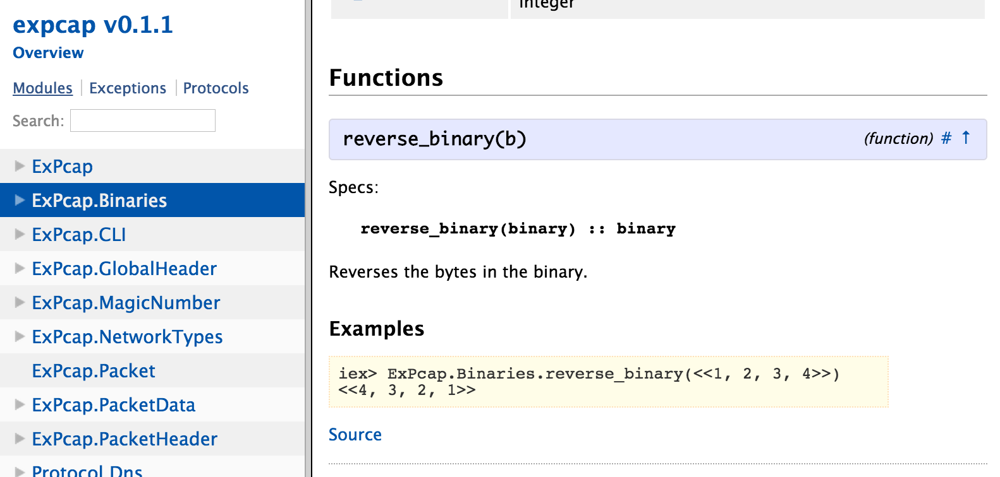

Elixir By Example
NoVA Elixir
Created by Bryan Weber / @brweber2 / @cobenian
A look at some real code
Follow along at https://github.com/Cobenian/expcap
What does this library do?
Parses PCAP files
You know, those files from Wireshark...
We're going to look at code like this...
Global Header
@doc """
Reads a global header from a binary containing a pcap header
(after the magic number)
"""
@spec read_forward(binary, ExPcap.MagicNumber.t)
:: ExPcap.GlobalHeader.t
def read_forward(data, magic_number) do
<<
version_major :: unsigned-integer-size(16),
version_minor :: unsigned-integer-size(16),
thiszone :: signed-integer-size(32),
sigfigs :: unsigned-integer-size(32),
snaplen :: unsigned-integer-size(32),
network :: unsigned-integer-size(32)
>> = data
%ExPcap.GlobalHeader{magic_number: magic_number,
version_major: version_major,
version_minor: version_minor,
thiszone: thiszone,
sigfigs: sigfigs,
snaplen: snaplen,
network: network}
end
What was that wall of text?
Today let's focus on the tools and processes...
Starting point
- Elixir installed
- Git installed
- *nix (not required)
Getting the code
>> cd ~/sandbox
>> git clone git@github.com:Cobenian/expcap.git
Project Structure
- /config
- /doc
- /lib
- /test
- mix.esx
- mix.lock
Project Structure
- /config - Per environment project configuration
- /doc
- /lib
- /test
- mix.esx
- mix.lock
Project Structure
- /config
- /doc - Generated HTML documentation
- /lib
- /test
- mix.esx
- mix.lock
Project Structure
- /config
- /doc
- /lib - Our code
- /test
- mix.esx
- mix.lock
Project Structure
- /config
- /doc
- /lib
- /test - Our test code
- mix.esx
- mix.lock
Project Structure
- /config
- /doc
- /lib
- /test
- mix.esx - Project descriptor
- mix.lock
Project Structure
- /config
- /doc
- /lib
- /test
- mix.esx
- mix.lock - Installed dependencies
So what can we do?
Compile the code
>> mix compile
It didn't work :(
Why?
Project dependencies!
Grab 'em and build 'em
>> mix deps.get
>> mix deps.compile
Where do they come from?
- hex.pm
- GitHub
- Bitbucket
- Git repos
- etc.
Where are they specified?
mix.exs
defp deps do
[{:timex, "~> 0.13.2"},
{:earmark, "~> 0.1", only: :dev},
{:ex_doc, "~> 0.6", only: :dev }]
end
You don't fool me, that's just a function
that returns a data structure...
Ah ha!
def project do
[app: :expcap,
version: "0.1.1",
elixir: "~> 1.0",
name: "expcap",
source_url: "https://github.com/cobenian/expcap",
description: description,
package: package,
deps: deps,
docs: docs,
escript: escript]
end
That's just data too...
but it points to a function... clever!
Let's try compiling again
>> mix compile
Wonderful, now what?
Let's ask mix!
>> mix help
Let's run it!
>> mix run
What happened?
This is a library, not a standalone application
It makes no sense without a file to parse though!
So we do want to run it as a CLI app
So, how do we do that?
answer: escript
What's an escript?
Sounds cool, can I have one?
lib/expcap/cli.ex
def main(argv) do
argv |> run
end
Boring, run must be more interesting!
def run(argv) do
argv |> parse_args |> process |> IO.puts
end
Maybe arg parsing?
def parse_args(argv) do
parse = argv |> OptionParser.parse(
switches: [help: :boolean, file: :string],
aliases: [h: :help, f: :file]
)
case parse do
{ [ help: true ], _, _ } -> :help
{ [ file: name ], _, _ } -> [file: name]
_ -> :help
end
end
So we take the args, and return an... atom
Why?
Because Elixir is better than your favorite programming language! ;)

Remember this function?
def run(argv) do
argv |> parse_args |> process |> IO.puts
end
Match on the arguments
def process(:help) do
"""
--file, -f <file> The PCAP file to use
--help, -h Print this message
"""
end
Match on a keyword list
def process([file: file]) do
file |> ExPcap.from_file |> String.Chars.to_string
end
What if no function matches?
So, back to that script thing...
Build a script
>> mix escript.build
The output
expcap
This is NOT a statically linked executable binary. It requires EVM.
Let's run it
>> ./expcap
>> ./expcap
--file, -f <file> The PCAP file to use
--help, -h Print this message
We just ran it, but now let's do something
>> ./expcap -f test/data/dns.cap
Lots of output redacted here...
What about testing?
By now, you can probably guess...
>> mix test
Once again, helpful output
>> mix test
Compiled lib/protocol/tcp.ex
Generated expcap.app
...............
Finished in 0.2 seconds (0.2s on load, 0.00s on tests)
15 tests, 0 failures
Randomized with seed 746935
Wait a minute!
CSI, can you zoom in on that?
zomg fast
Finished in 0.2 seconds (0.2s on load, 0.00s on tests)
0.2s on load, 0.00s on tests

Should I even bother showing test code?
Of course!
defmodule ExPcapTest do
use ExUnit.Case
test "the truth" do
assert 1 + 1 == 2
end
end
assert vs. =
So, what about that pesky documentation thing?
use ex_doc
Add it to mix.exs
defp deps do
[{:timex, "~> 0.13.2"},
{:earmark, "~> 0.1", only: :dev},
{:ex_doc, "~> 0.6", only: :dev }]
end
Docs are just markdown
earmark
defp deps do
[{:timex, "~> 0.13.2"},
{:earmark, "~> 0.1", only: :dev},
{:ex_doc, "~> 0.6", only: :dev }]
end
Not too hard
>> mix docs
More helpful output
>> mix docs
Compiled lib/protocol/tcp.ex
Generated expcap.app
Docs successfully generated.
View them at "doc/index.html".
So what does it look like?
Check it out
>> open doc/index.html
Cool, where did all that come from?
Module docs
@moduledoc """
This module contains information about the types of packets that are contained
in the PCAP file. For example, if the network type is 'ethernet' then each
packet in the pcap file will be an ethernet packet.
"""
Function docs
@doc """
Reads a pcap packet header from the file.
"""
Examples in docs
@doc """
Converts a list of bytes to a binary.
Ideally, this would be replaced by a standard elixir function, but I have not
been able to find such a function in the standard library.
## Examples
iex> ExPcap.Binaries.to_binary([1, 2, 3, 4])
<<1, 2, 3, 4>>
"""

Executable docs
@doc """
Converts a list of bytes to a binary.
Ideally, this would be replaced by a standard elixir function, but I have not
been able to find such a function in the standard library.
## Examples
iex> ExPcap.Binaries.to_binary([1, 2, 3, 4])
<<1, 2, 3, 4>>
"""
How?
defmodule ExPcap.DocTest do
use ExUnit.Case
doctest ExPcap.CLI
doctest ExPcap.Binaries
doctest ExPcap.GlobalHeader
doctest ExPcap.MagicNumber
doctest ExPcap.Packet
doctest ExPcap.PacketData
doctest ExPcap.PacketHeader
end
Is this a good idea?
Maybe?
Really, it is for you to decide.
Time to code
Most important thing EVAR!
>> iex -S mix
> iex -S mix
Erlang/OTP 17 [erts-6.2] [source-aaaefb3] [64-bit] [smp:4:4] [async-threads:10] [hipe] [kernel-poll:false]
Compiled lib/protocol/tcp.ex
Generated expcap.app
Interactive Elixir (1.0.2) - press Ctrl+C to exit (type h() ENTER for help)
iex(1)> ExPcap.Binaries.to_binary([1,2,3,4])
<<1, 2, 3, 4>>


Questions?
Get coding!